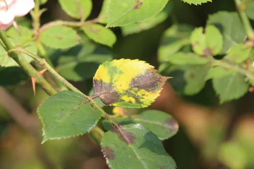

黑斑病
叶片上出现黑色斑块
这是与该表现相符的一种可能原因，请结合下方特征核对。

先看哪里
查看黑色病斑是否长在叶组织内、周围是否发黄，并检查较低叶片有无提前脱落。
可能原因与下一步
玫瑰黑斑病可形成深色病斑并使叶片脱落；能擦去的黑层则可能是煤污。清理病落叶，从根部浇水，给叶丛留出通风空间。
叶片上出现黑色斑块
这是与该表现相符的一种可能原因，请结合下方特征核对。

查看黑色病斑是否长在叶组织内、周围是否发黄，并检查较低叶片有无提前脱落。
玫瑰黑斑病可形成深色病斑并使叶片脱落；能擦去的黑层则可能是煤污。清理病落叶，从根部浇水，给叶丛留出通风空间。